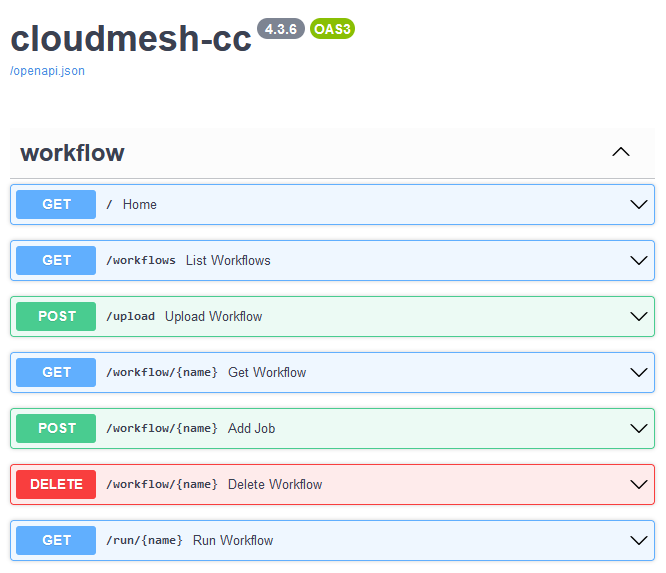
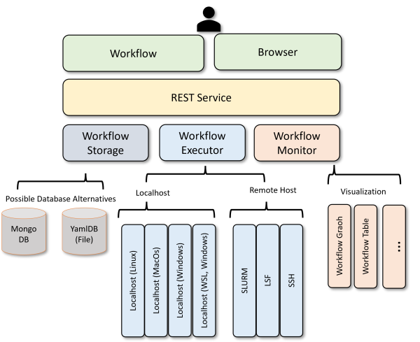

Hybrid Multi-Cloud Analytics Services Framework
Cloudmesh Controlled Computing through Workflows
Gregor von Laszewski (laszewski@gmail.com)$^*$, Jacques Fleischer
$^*$ Corresponding author
Background
High-performance computing (HPC) is for decades a very important tool for science. Scientific tasks can be leveraging the processing power of a supercomputer so they can run at previously unobtainable high speeds or utilize specialized hardware for acceleration that otherwise are not available to the user. HPC can be used for analytic programs that leverage machine learning applied to large data sets to, for example, predict future values or to model current states. For such high-complexity projects, there are often multiple complex programs that may be running repeatedly in either competition or cooperation. Leveraging for example computational GPUs leads to several times higher performance when applied to deep learning algorithms. With such projects, program execution is submitted as a job to a typically remote HPC center, where time is billed as node hours. Such projects must have a service that lets the user manage and execute without supervision. We have created a service that lets the user run jobs across multiple platforms in a dynamic queue with visualization and data storage.
{#fig:fastapi-service width=50%}
Workflow Controlled Computing
This software was developed end enhancing Cloudmesh, a suite of software to make using cloud and HPC resources easier. Specifically, we have added a library called Cloudmesh Controlled Computing (cloudmesh-cc) that adds workflow features to control the execution of jobs on remote compute resources.
The goal is to provide numerous methods of specifying the workflows on a local computer and running them on remote services such as HPC and cloud computing resources. This includes REST services and command line tools. The software developed is freely available and can easily be installed with standard python tools so integration in the python ecosystem using virtualenv’s and anaconda is simple.
Workflow Functionality
A hybrid multi-cloud analytics service framework was created to manage heterogeneous and remote workflows, queues, and jobs. It was designed for access through both the command line and REST services to simplify the coordination of tasks on remote computers. In addition, this service supports multiple operating systems like macOS, Linux, and Windows 10 and 11, on various hosts: the computer’s localhost, remote computers, and the Linux-based virtual image WSL. Jobs can be visualized and saved as a YAML and SVG data file. This workflow was extensively tested for functionality and reproducibility.
Quickstart
To test the workflow program, prepare a cm directory in your home directory by executing the following commands in a terminal:
cd ~
mkdir cm
cd cm
pip install cloudmesh-installer -U
cloudmesh-installer get cc
git clone https://github.com/cloudmesh/cloudmesh-cc
cd cloudmesh-cc
pip install -e .
pip install -r requirements.txt
pytest -v -x --capture=no tests/test_080_workflow_clean.py
This test runs three jobs within a singular workflow: the first job runs a local shell script, the second runs a local Python script, and the third runs a local Jupyter notebook.
Application demonstration using MNIST
The Modified National Institute of Standards and Technology Database is a machine learning database based on image processing Various MNIST files involving different machine learning cases were modified and tested on various local and remote machines These cases include Multilayer Perceptron, LSTM (Long short-term memory), Auto-Encoder, Convolutional, and Recurrent Neural Networks, Distributed Training, and PyTorch training
{#fig:workflow-uml}
Design
The hybrid multi-cloud analytics service framework was created to ensure running jobs across many platforms. We designed a small and streamlined number of abstractions so that jobs and workflows can be represented easily. The design is flexible and can be expanded as each job can contain arbitrary arguments. This made it possible to custom design for each target type a specific job type so that execution on local and remote compute resources including batch operating systems can be achieved. The job types supported include: local job on Linux, macOS, Windows 10, and Windows 11, jobs running in WSL on Windows computers, remote jobs using ssh, and a batch JObs using Slurm.
In addition, we leveraged the exiting Networkx Graph framework to allow dependencies between jobs. This greatly reduced the complexity of the implementation while being able to leverage graphical displays of the workflow, as well as using scheduling jobs with for example topological sort available in Networkx. Custom schedulers can be designed easily based on the dependencies and job types managed through this straightforward interface. The status of the jobs is stored in a database that can be monitored during program execution. The creation of the jobs is done on the fly, e.g. when the job is needed to be determined on the dependencies when all its parents are resolved. This is especially important as it allows dynamic workflow patterns to be implemented while results from previous calculations can be used in later stages of the workflow.
We have developed a simple-to-use API for this so programs can be formulated using the API in python. However, we embedded this API also in a prototype REST service to showcase that integration into language-independent frameworks is possible. The obvious functions to manage workflows are supported including graph specification through configuration files, upload of workflows, export, adding jobs and dependencies, and visualizing the workflow during the execution. An important feature that we added is the monitoring of the jobs while using progress reports through automated log file mining. This way each job reports the progress during the execution. This is especially of importance when we run very complex and long-running jobs.
The REST service was implemented in FastAPI to leverage a small but fast service that features a much smaller footprint for implementation and setup in contrast to other similar REST service frameworks using python.
This architectural component building this framework is depicted @fig:workflow-uml. The code is available in this repository and manual pages are provided on how to install it: cloudmesh-cc.
Summary
The main interaction with the workflow is through the command line. With the framework, researchers and scientists should be able to create jobs on their own, place them in the workflow, and run them on various types of computers.
In addition, developers and users can utilize the built-in OpenAPI graphical user interface to manage workflows between jobs. They can be uploaded as YAML files or individually added through the build-in debug framework.
Improvements to this project will include code cleanup and manual development.
References
A poster based on a pre-alpha version of this code is available as ppt and PDF file. However, that version is no longer valid and is superseded by much improved efforts. The code summarized in the pre-alpha version was mainly used to teach a number of students Python and how to work in a team
Please note also that the poster contains inaccurate statements and descriptions and should not be used as a reference to this work.
Acknowledgments
Continued work was in part funded by the NSF CyberTraining: CIC: CyberTraining for Students and Technologies from Generation Z with the award numbers 1829704 and 2200409. We like to thank the following contributors for their help and evaluation in a pre-alpha version of the code: Jackson Miskill, Alex Beck, Alison Lu. We are excited that this effort contributed significantly to their increased understanding of Python and how to develop in a team using the Python ecosystem.